Geplante Verpaarung
Eine Vorschau auf unsere nächsten Würfe 🤎
Mögliche Kittenfarben dieser Verpaarung
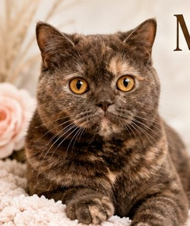
in Chocolate Tortie
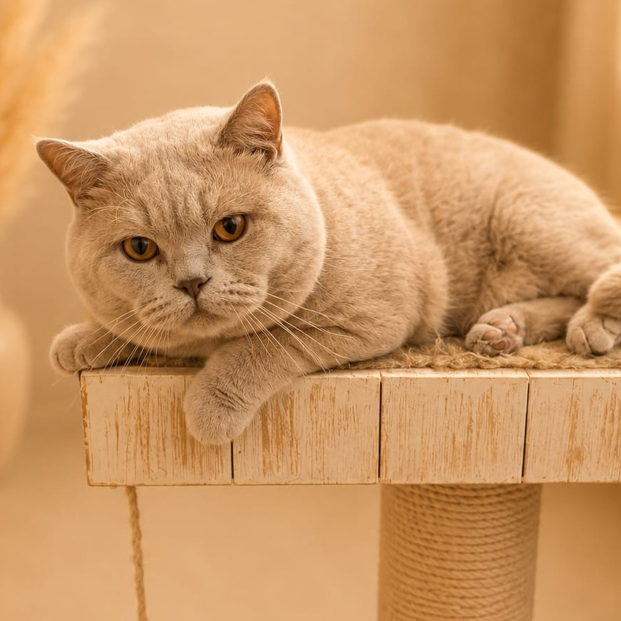
in Fawn
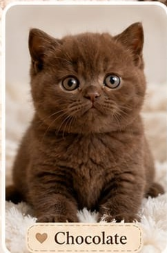
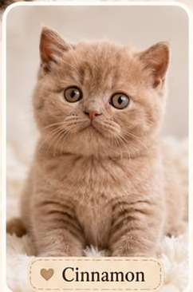
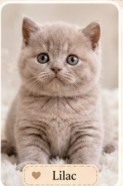
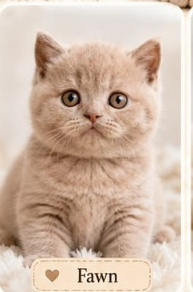
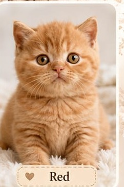
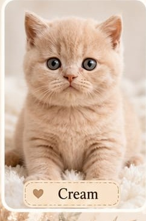
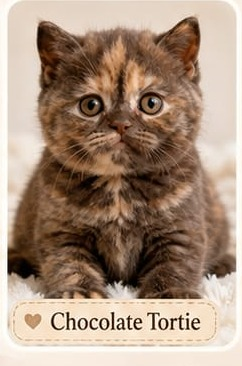
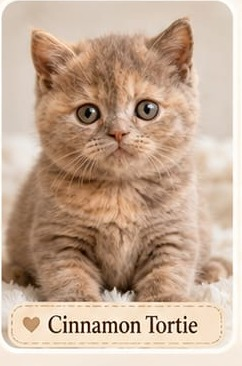
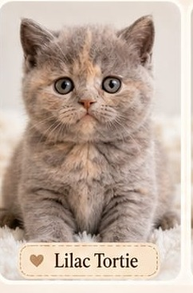
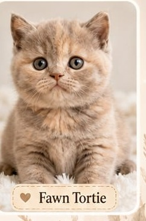
Mögliche Kittenfarben dieser Verpaarung
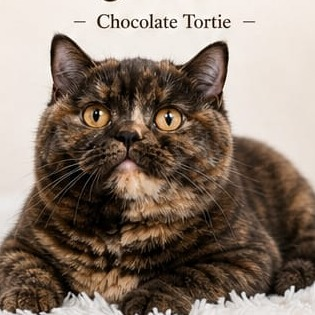
in Chocolate Tortie
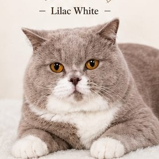
in Lilac White
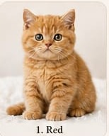
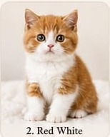
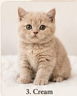
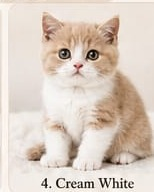
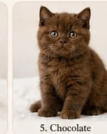
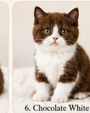
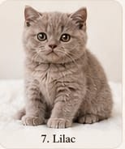
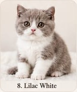
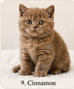
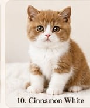
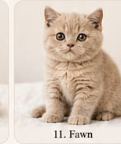
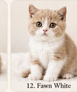
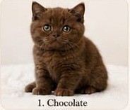
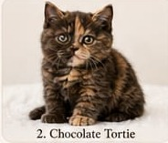
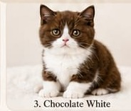
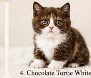
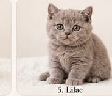
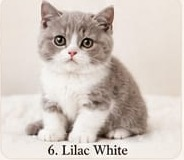
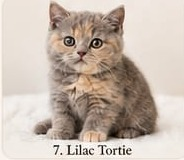
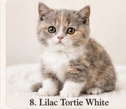
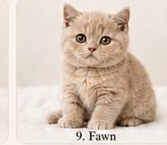
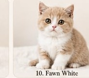
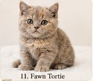
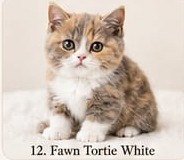
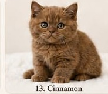
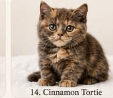
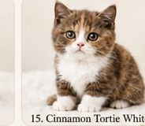
Jedes Kitten ist einzigartig und wunderschön auf seine eigene Weise. 🤎